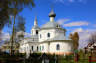
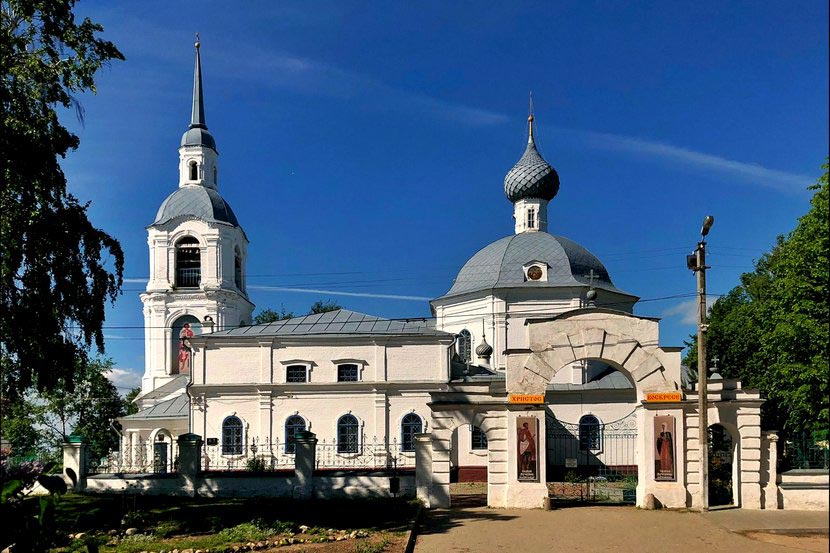
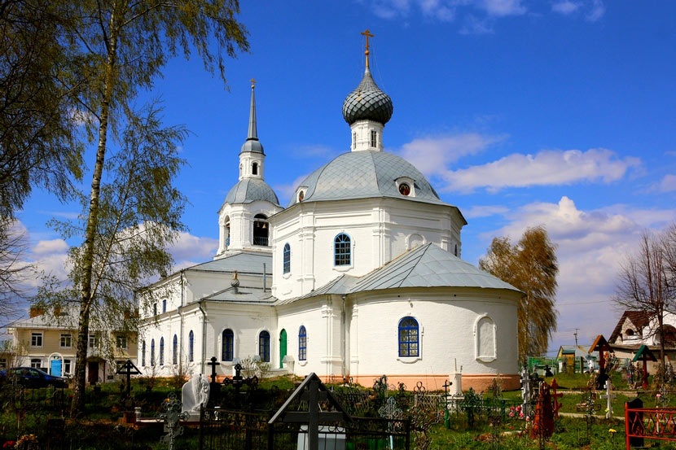

Церковь Александра и Антонины Римских в Селище, Селище, Костромской р-н, Костромская область, Россия
| Широта | 57°45'32.06"С |
| Долгота | 40°52'39.80"В |
| Область/Район/Уезд | Костромская область |
| Государство/Страна | Россия |
| Входит в | |
|---|---|
| Селище | |
| Место включает |
Альбом

×
❮
❯
1/2 - Церковь Александра и Антонины в Селищах

2/2 - Церковь Александра и Антонины в Селищах(2)

Ссылки
| Тип | Описание |
|---|---|
| Страница в сети | Страница храма в сети [Переход] |
| Статья в интернете | Храм во имя святых мучеников Александра и Антонины в Селище - В РЕВОЛЮЦИЮ И ГРАЖДАНСКУЮ ВОЙНУ [Переход] |
| Статья в интернете | Александр святый на Костроме [Переход] |
| Страница в сети | Метрические книги Александро-Антониновой церкви с. Селище для записи родившихся, бракосочетавшихся и умерших [Переход] |
Карта места
Ссылки
- Семья Чернов, Андрей Никандрович и Чернова, Анфиса Федоровна (17 окт 1865 (Юлианский))
- Чернова, Анфиса Федоровна (17 окт 1865 (Юлианский))
- Чернов, Андрей Никандрович (17 окт 1865 (Юлианский))
- Чернов, Владимир Андреевич (18 июл 1882 (Юлианский))
- Чернова Гарибина, Мария Ивановна (18 июн 1884 Крещение)
- Гарибин, Петр Иванович (18 авг 1892 (Юлианский))
- Семья Чернов, Владимир Андреевич и Чернова Гарибина, Мария Ивановна (25 окт 1908 (Юлианский))
- Чернова Гарибина, Мария Ивановна (25 окт 1908 (Юлианский))
- Чернов, Владимир Андреевич (25 окт 1908 (Юлианский))